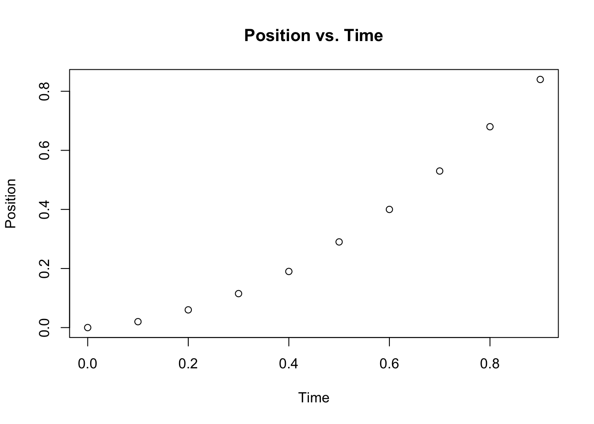
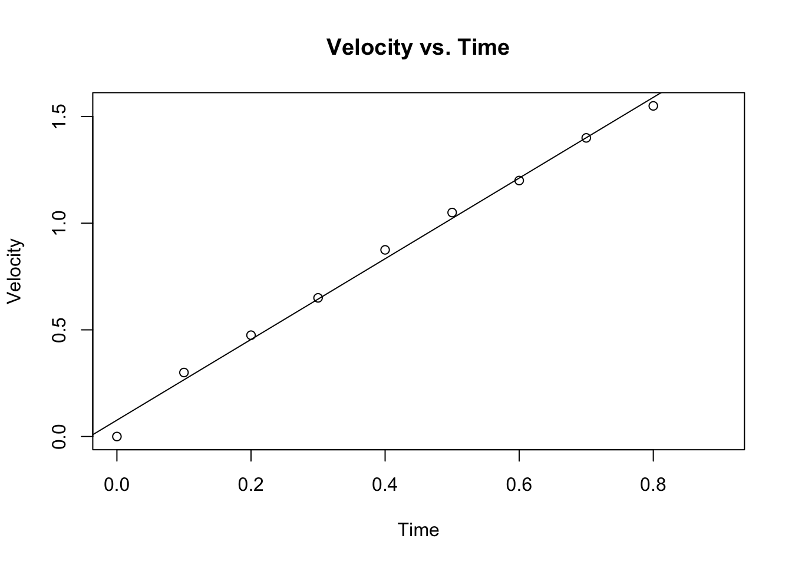
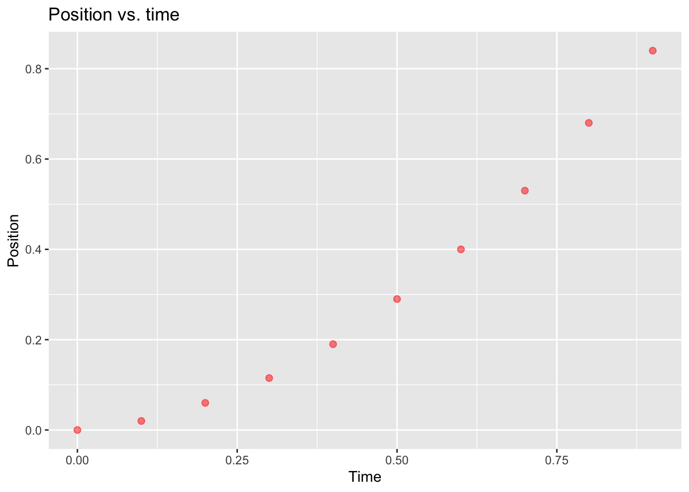
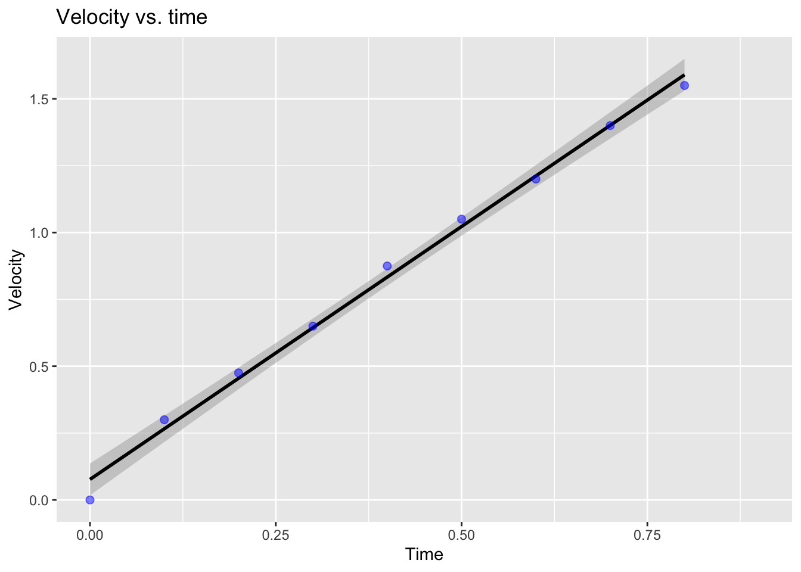
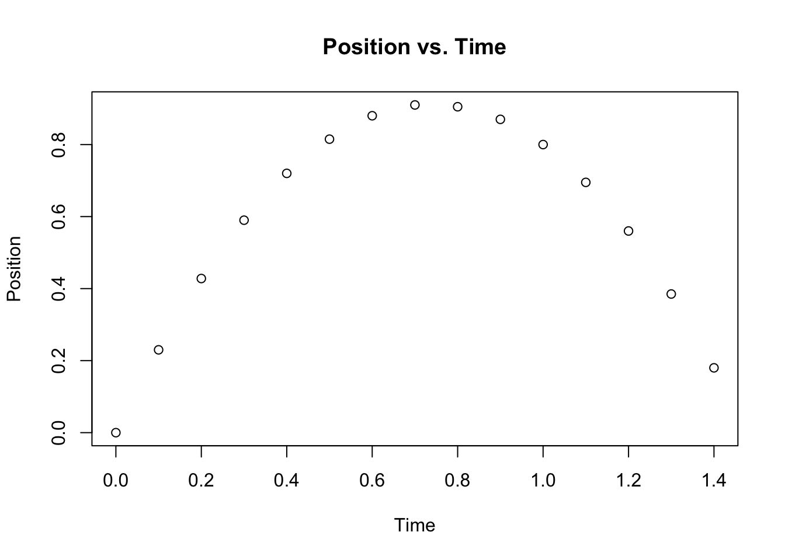
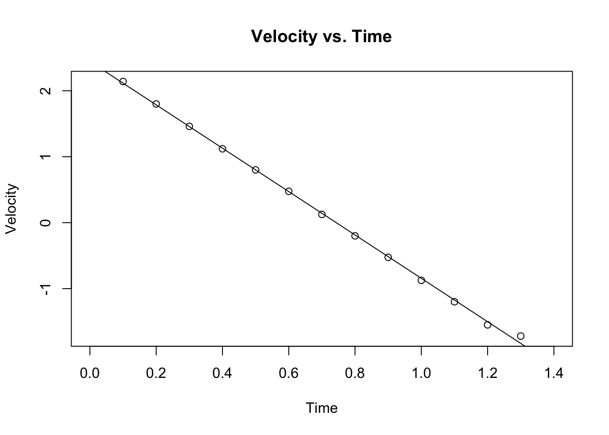
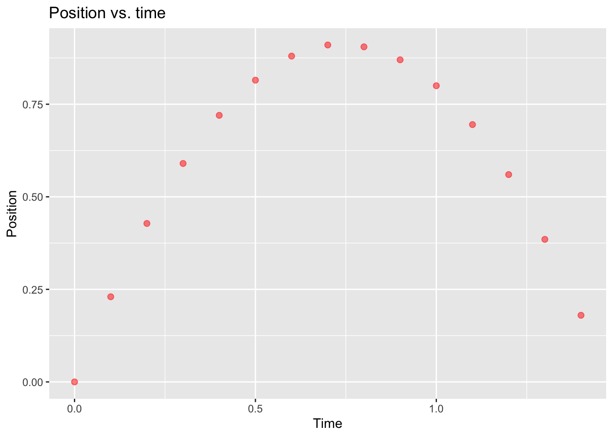
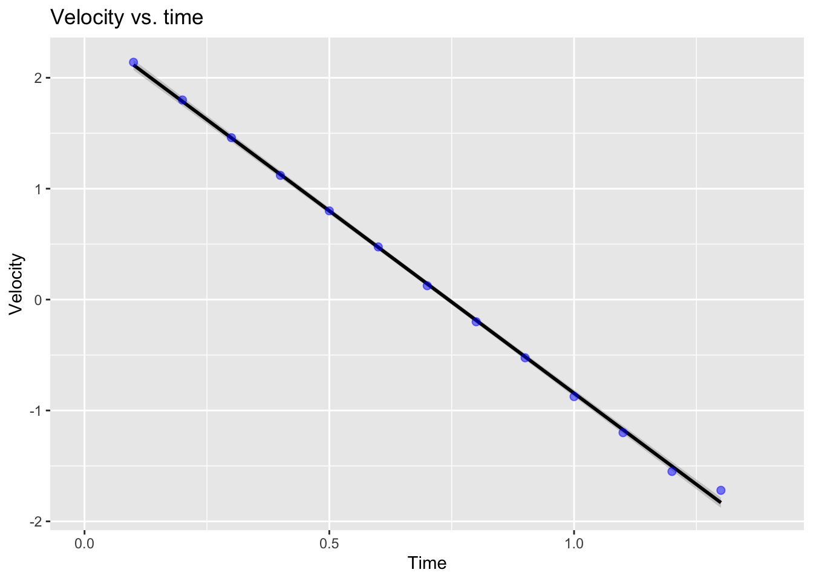

Chapter 3 Lab2: Position, Velocity, and Acceleration
3.1 Part1: Motion of the glider
Mass of the glider, m= 0.80 kg and the strenth of fan force was selected to level 3.
3.1.1 Data
3.1.2 Creating a data table
## time Position Velocity
## 1 0.0 0.000 0.000
## 2 0.1 0.020 0.300
## 3 0.2 0.060 0.475
## 4 0.3 0.115 0.650
## 5 0.4 0.190 0.875
## 6 0.5 0.290 1.050
## 7 0.6 0.400 1.200
## 8 0.7 0.530 1.400
## 9 0.8 0.680 1.550
## 10 0.9 0.840 NA3.1.3 Plotting Position vs. Time

3.1.4 Plotting Velocity vs. Time
fit2<- lm(Velocity~time, data)
plot(data$time, data$Velocity, main="Velocity vs. Time", xlab="Time", ylab="Velocity")
abline(fit2)
3.1.5 Fitting the linear regression model and extracting the coefficients
##
## Call:
## lm(formula = Velocity ~ time, data = data)
##
## Residuals:
## Min 1Q Median 3Q Max
## -0.076667 -0.011667 0.005833 0.027500 0.041667
##
## Coefficients:
## Estimate Std. Error t value Pr(>|t|)
## (Intercept) 0.07667 0.02514 3.05 0.0186 *
## time 1.89167 0.05280 35.83 3.43e-09 ***
## ---
## Signif. codes: 0 '***' 0.001 '**' 0.01 '*' 0.05 '.' 0.1 ' ' 1
##
## Residual standard error: 0.0409 on 7 degrees of freedom
## (1 observation deleted due to missingness)
## Multiple R-squared: 0.9946, Adjusted R-squared: 0.9938
## F-statistic: 1284 on 1 and 7 DF, p-value: 3.427e-09## Estimate Std. Error t value Pr(>|t|)
## (Intercept) 0.07666667 0.02513719 3.04993 1.858505e-02
## time 1.89166667 0.05279866 35.82793 3.426689e-093.2 Plots using ggplot
3.2.1 Position vs. Time
g1<- ggplot(data, aes(x=time, y=Position))+
geom_point(size = 2, colour = "red", alpha=0.5)+
xlab("Time")+
ylab("Position") +
ggtitle("Position vs. time")
g1
###Velocity vs. Time
g2 <- ggplot(data, aes(x=time, y=Velocity))+
geom_smooth(method = "lm", colour = "black") +
xlab("Time")+
ylab("Velocity") +
ggtitle("Velocity vs. time") +
geom_point(size = 2, colour = "blue", alpha=0.5)
g2 \[ v_o= 0.077 \pm 0.025 \frac{m}{s} \] \[ a= 1.892 \pm 0.053 \frac{m}{s^2} \]
3.2.2 Exporting data as csv file.
3.3 Part2: Acceleration of a Turbine-Powered Glider
Here’s the collected data
time <- seq(0,1.4, by=0.1)
Position<- c(0,0.23,0.428, 0.59, 0.72, 0.815, 0.88, 0.91, 0.905, 0.87,0.8, 0.695,0.56,0.385, 0.18)
Velocity <- c(NA,2.14,1.8,1.46,1.12, 0.8, 0.475, 0.125, -0.2, -0.525, -0.875,-1.2,-1.55,-1.72,NA)3.3.1 Creating a data table
## time Position Velocity
## 1 0.0 0.000 NA
## 2 0.1 0.230 2.140
## 3 0.2 0.428 1.800
## 4 0.3 0.590 1.460
## 5 0.4 0.720 1.120
## 6 0.5 0.815 0.800
## 7 0.6 0.880 0.475
## 8 0.7 0.910 0.125
## 9 0.8 0.905 -0.200
## 10 0.9 0.870 -0.525
## 11 1.0 0.800 -0.875
## 12 1.1 0.695 -1.200
## 13 1.2 0.560 -1.550
## 14 1.3 0.385 -1.720
## 15 1.4 0.180 NA3.3.2 Plotting Position vs. Time

3.3.3 Plotting Velocity vs. Time
fit3<- lm(Velocity~time, data1)
plot(data1$time, data1$Velocity, main="Velocity vs. Time", xlab="Time", ylab="Velocity")
abline(fit3)
3.3.4 Fitting the linear regression model and extracting the coefficients
##
## Call:
## lm(formula = Velocity ~ time, data = data1)
##
## Residuals:
## Min 1Q Median 3Q Max
## -0.047802 -0.017308 -0.009011 0.003791 0.111099
##
## Coefficients:
## Estimate Std. Error t value Pr(>|t|)
## (Intercept) 2.44462 0.02361 103.5 <2e-16 ***
## time -3.28901 0.02974 -110.6 <2e-16 ***
## ---
## Signif. codes: 0 '***' 0.001 '**' 0.01 '*' 0.05 '.' 0.1 ' ' 1
##
## Residual standard error: 0.04013 on 11 degrees of freedom
## (2 observations deleted due to missingness)
## Multiple R-squared: 0.9991, Adjusted R-squared: 0.999
## F-statistic: 1.223e+04 on 1 and 11 DF, p-value: < 2.2e-16## Estimate Std. Error t value Pr(>|t|)
## (Intercept) 2.444615 0.02360802 103.5502 8.513850e-18
## time -3.289011 0.02974331 -110.5798 4.136457e-183.4 Plots using ggplot
3.4.1 Position vs. Time
g3<- ggplot(data1, aes(x=time, y=Position))+
geom_point(size = 2, colour = "red", alpha=0.5)+
xlab("Time")+
ylab("Position") +
ggtitle("Position vs. time")
g3
###Velocity vs. Time
g4 <- ggplot(data1, aes(x=time, y=Velocity))+
geom_smooth(method = "lm", colour = "black") +
xlab("Time")+
ylab("Velocity") +
ggtitle("Velocity vs. time") +
geom_point(size = 2, colour = "blue", alpha=0.5)
g4
\[ v_o= 2.445 \pm 0.024 \frac{m}{s} \] \[ a= -3.289 \pm 0.03 \frac{m}{s^2} \]